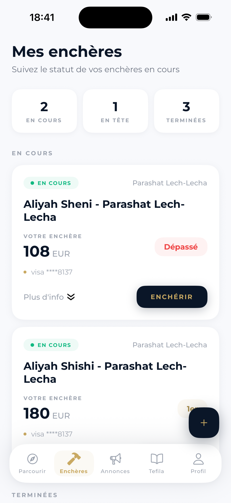
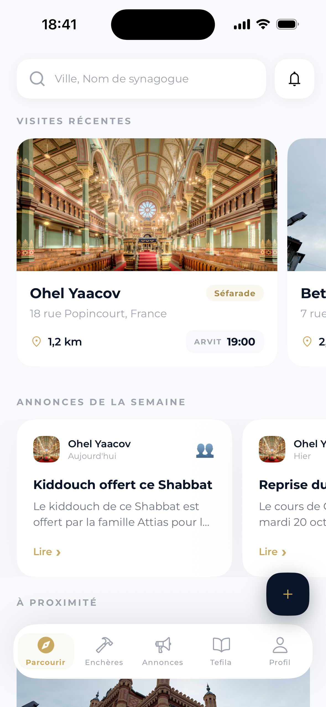
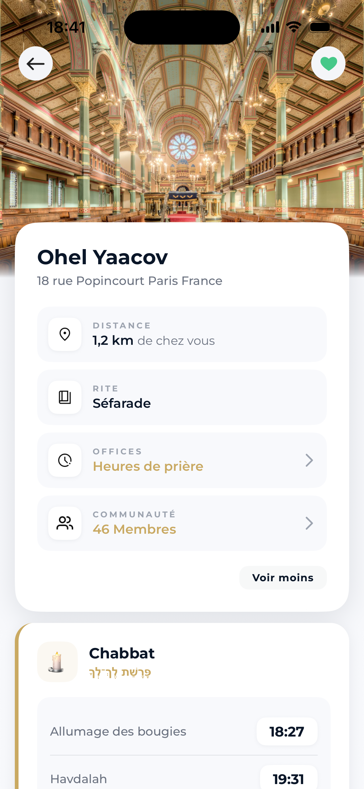
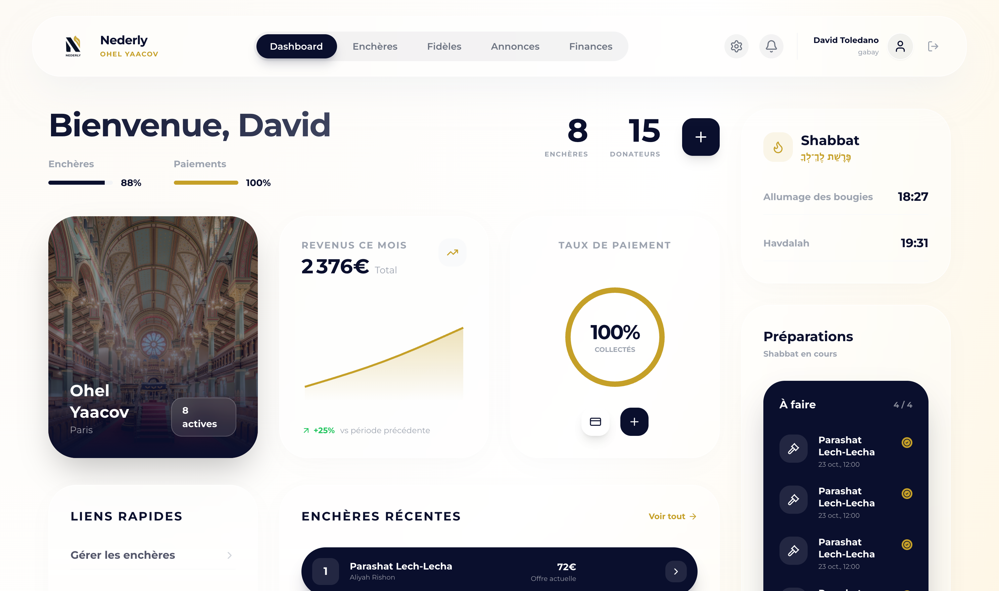
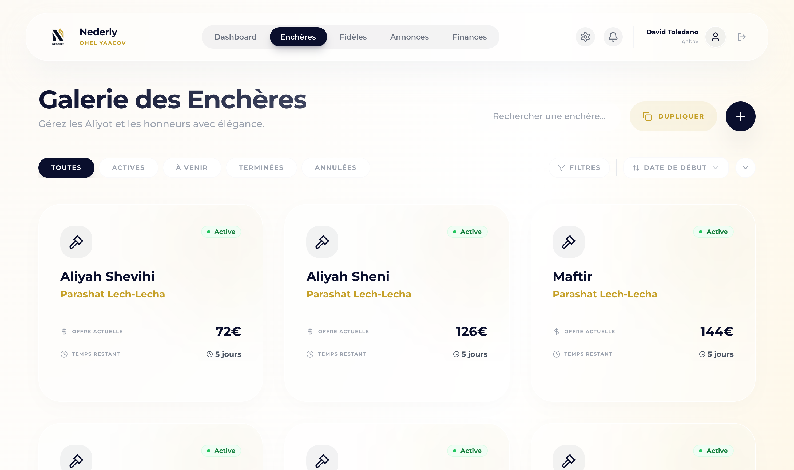

המתפללים שלכם מציעים מחיר על העליות מהטלפון, עד יום שישי. Nederly סוגרת את המכירה לפני שבת וגובה את התשלומים.
בשבועות הראשונים צוות Nederly עובד איתכם, מההגדרות ועד המכירה הראשונה שנסגרת לפני שבת.
יחד עם צוות Nederly: דף בית הכנסת, העליות של השבוע והחשבון לקבלת הכספים.
המתפללים מקבלים את העליות בטלפון ומציעים מחיר עד יום שישי.
המכירה נסגרת אוטומטית והזוכים מחויבים.
קשר ישיר עם הצוות שבונה את Nederly.
Nederly מנהלת את המכירות, התשלומים וההתראות, כדי שתוכלו להתמקד בקהילה.
המתפללים מציעים מחיר לפני שבת, ואתם רואים הכול בזמן אמת. כל הצעה גבוהה יותר שולחת התראה, כך שאף אחד לא מפספס את העלייה שלו.
דוגמה: אתם מציעים 260 ₪ על עליית שני, משה ר. מציע 280 ₪ ואתם מקבלים התראה שעקפו אתכם; אתם מעלים ל־320 ₪ וזוכים בעלייה כשהמכירה נסגרת, לפני שבת.
הסכום נתפס במסגרת האשראי ברגע ההצעה, ומחויב רק אם זוכים. הגבאי לא צריך לגבות אף שקל בעצמו.

מוצאים את בית הכנסת לפי שם או לפי מיקום, מצטרפים בלחיצה ומקבלים את ההודעות שלו. מתפללים בכמה בתי כנסת? מספיק חשבון אחד.

המכירות נסגרות אוטומטית לפני שבת וחג, ואין מה לעשות במהלכם. זמני הדלקת נרות, הבדלה ופרשת השבוע מובנים באפליקציה.

30 שניות עם כתובת האימייל. בלי טפסים ובלי המתנה לאישור.
לפי שם או לפי מיקום, ומצטרפים בלחיצה אחת.
בוחרים עלייה ומגישים הצעה. בכל פעם שמישהו עוקף אתכם, מגיעה התראה.
כמה דקות ב־admin.nederly.io. בלי התחייבות ובלי כרטיס אשראי.
בוחרים את העליות של השבוע וקובעים מחירים. תבניות מוכנות לראש השנה, יום כיפור וסוכות.
הם מורידים את האפליקציה ומציעים מחיר. אתם עוקבים בזמן אמת, והתשלומים נגבים אוטומטית.
למתפללים, Nederly בחינם תמיד. לבתי כנסת בישראל, ספרו לנו על הקהילה ועל היקף המכירות, ונחזור אליכם עם הצעה מתאימה.
ומה עם הצדקה? היא נשארת שלמה: העלויות של Nederly הן הוצאה תפעולית של בית הכנסת, נפרדת מהצדקה של המתפלל.לעמדה ההלכתית ←
יוצרים מכירה בשתי לחיצות, מקבלים את התשלומים אוטומטית ומעדכנים את המתפללים, הכול מלוח בקרה פשוט שנבנה במיוחד בשבילכם.


כן, לגמרי. המתפללים לא משלמים ל־Nederly דבר: לא מנוי, לא עמלה ולא עלויות נסתרות. בתי הכנסת הם שמשלמים על השירות.
לא. הצדקה של התורם נזקפת במלואה לזכות בית הכנסת. העלויות של Nederly (מנוי ועמלה) הן הוצאה תפעולית של בית הכנסת, נפרדת מהצדקה, בדיוק כמו חשמל או ציוד. העמדה ההלכתית שלנו מפורטת כאן.
התשלומים עוברים דרך Stripe. כשמציעים מחיר, הסכום נתפס במסגרת האשראי ומחויב בפועל רק אם זוכים במכירה; אחרת, המסגרת משתחררת. פרטי הכרטיס מנוהלים על ידי Stripe ולעולם לא נשמרים אצל Nederly.
זה תלוי בהיקף הפעילות של בית הכנסת. לבתי כנסת בישראל אנחנו מכינים הצעה מותאמת: צרו קשר ונחזור אליכם.
בקשו מהגבאי או מוועד בית הכנסת להירשם ב־admin.nederly.io. ההקמה לוקחת פחות מ־10 דקות. אם אתם הגבאים, אפשר להירשם ישירות או לפנות אלינו ונלווה אתכם.
בהחלט. המכירות מתקיימות לפני שבת ונסגרות אוטומטית לפני כניסת שבת או החג, ואין צורך לעשות שום דבר במהלכם. לוח השנה העברי (Hebcal) מובנה במערכת.
כן. אין התחייבות: אפשר להפסיק בכל עת, בלי קנס.
השאירו כתובת אימייל ונעדכן אתכם ביום שהאפליקציות ל־iOS ול־Android יעלו לאוויר, ותו לא (בלי ניוזלטר). גבאים יכולים כבר עכשיו לרשום את בית הכנסת: ההקמה לוקחת פחות מ־10 דקות.